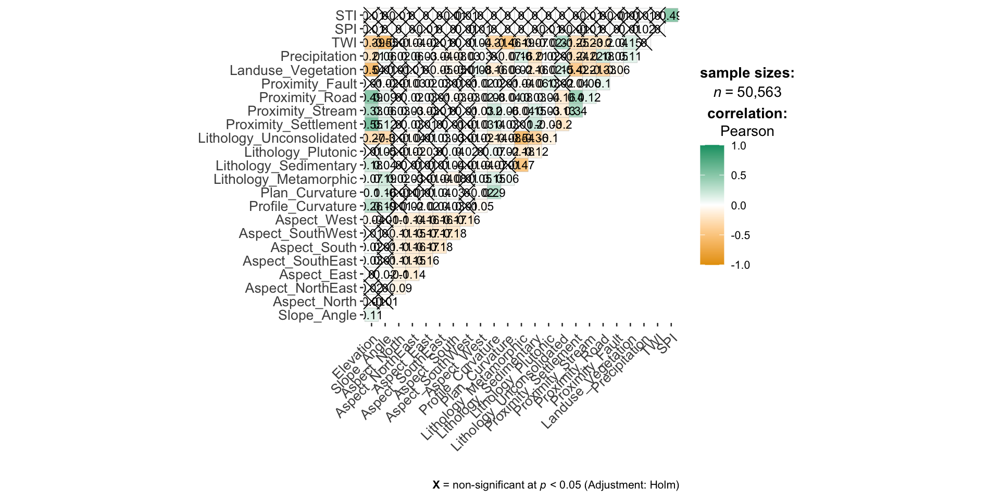
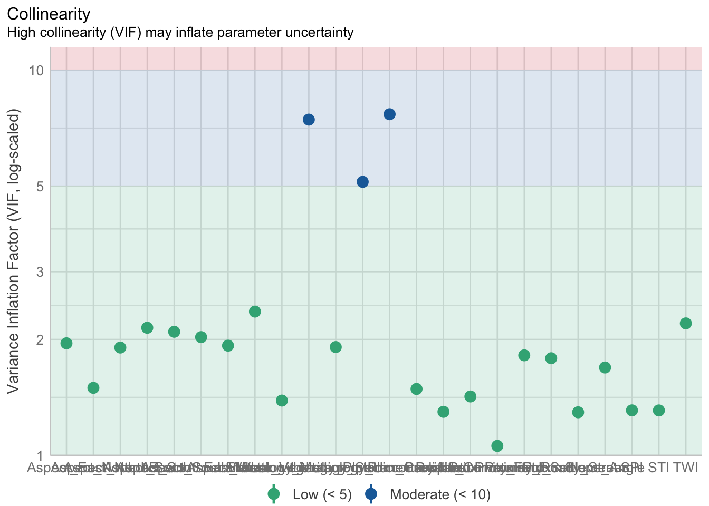
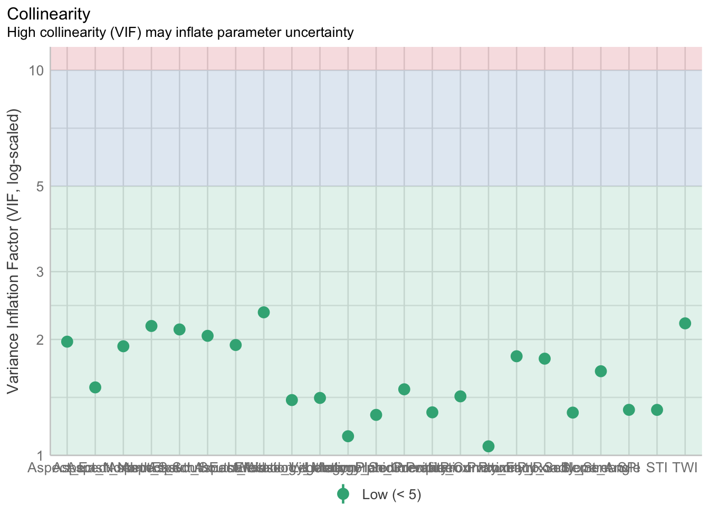
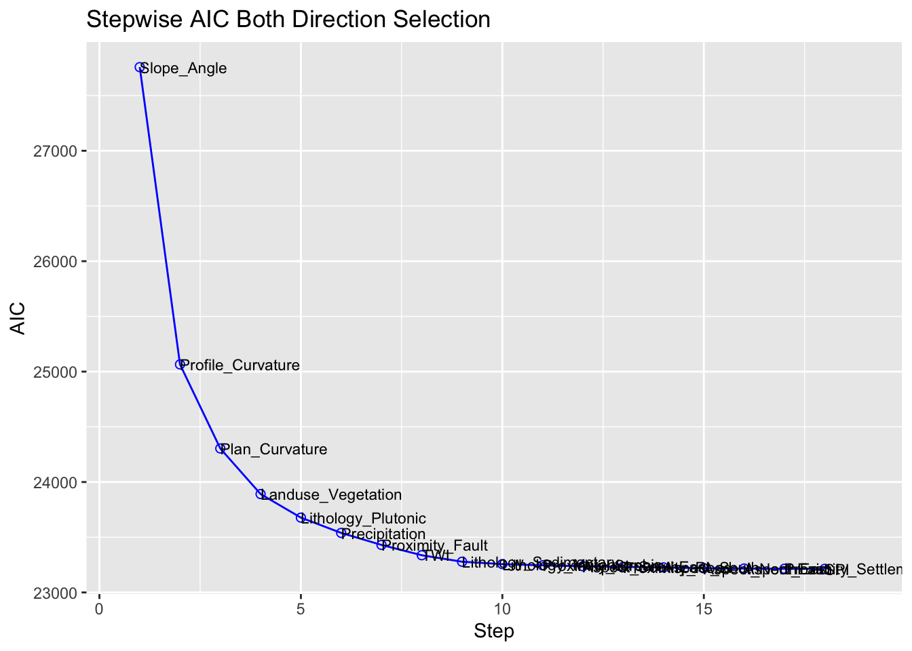
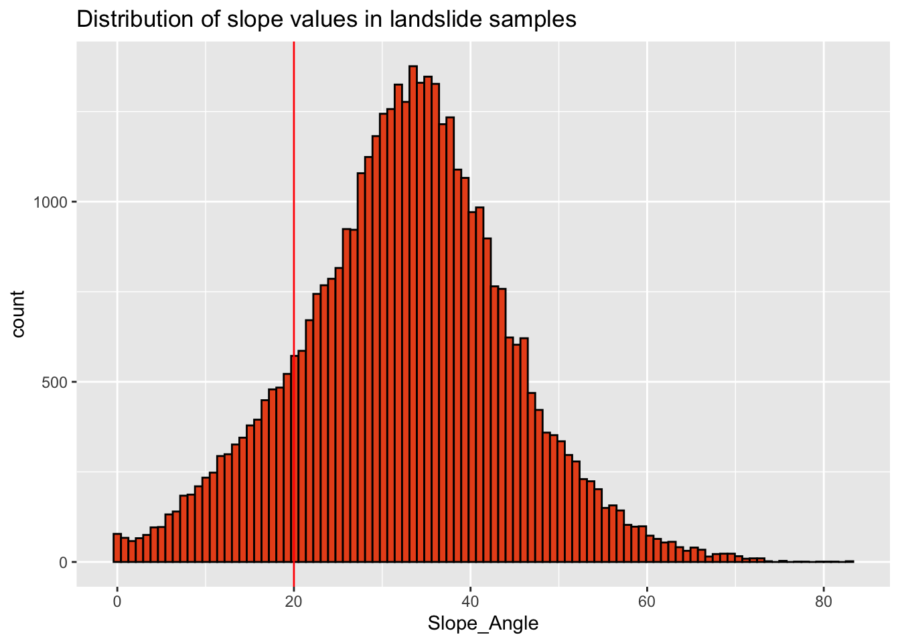
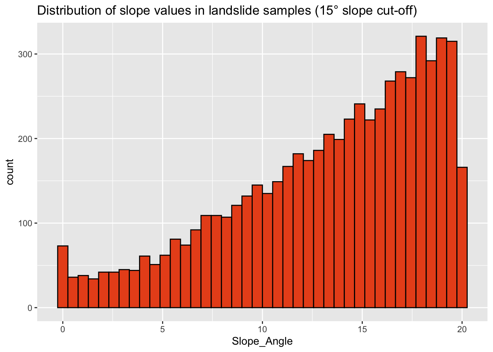
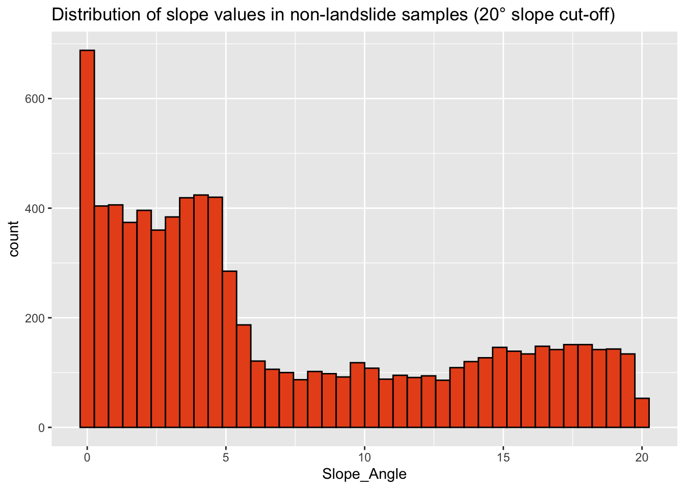

pacman::p_load(sp, sf, st, spdep, raster, spatstat, tmap, devtools,vtable,ggplot2,egg, corrplot, patchwork, ggstats, ggstatsplot, GWmodel, tidyverse, gtsummary,vtable, sjPlot, sjmisc, sjlabelled, tableHTML, olsrr, car, blorr,ISLR, klaR, rsample,kableExtra, performance)Statistical Modelling
R
sf
gwmodel
To develop a landslide susceptibility methodology framework, we will explore and calibrate different statistical and machine learning models. This page focuses on statistical models first.
1.0 Import Packages
2.0 Import Data
valtellina <- read_sf(dsn = "data/vector", layer = "valtellina")
train_grids_v4 <- read.csv("data/aspatial/train_grid_v4.csv")train_grid_v4.sf <- st_as_sf(train_grids_v4,
coords = c("X", "Y"))
train_grid_v4.sf <- st_set_crs(train_grid_v4.sf, 32632) 3.0 Exploratory Spatial Data Analysis (ESDA)
To calculate the summary statistics of landslide_train data frame, we use st().
st(train_grids_v4)| Variable | N | Mean | Std. Dev. | Min | Pctl. 25 | Pctl. 75 | Max |
|---|---|---|---|---|---|---|---|
| Train_ID | 50563 | 25282 | 14596 | 1 | 12642 | 37922 | 50563 |
| Grid_ID | 50563 | 7258576 | 4280699 | 154 | 3455206 | 11141722 | 14724829 |
| X | 50563 | 573312 | 27325 | 519097 | 550687 | 594547 | 624487 |
| Y | 50563 | 5129116 | 17040 | 5095541 | 5115266 | 5143076 | 5164991 |
| Landslide | 50563 | 0.83 | 0.38 | 0 | 1 | 1 | 1 |
| Elevation | 50563 | 1913 | 677 | 0 | 1509 | 2420 | 3924 |
| Slope_Angle | 50563 | 29 | 15 | 0 | 18 | 39 | 83 |
| Aspect_North | 50563 | 0.061 | 0.24 | 0 | 0 | 0 | 1 |
| Aspect_NorthEast | 50563 | 0.12 | 0.32 | 0 | 0 | 0 | 1 |
| Aspect_East | 50563 | 0.14 | 0.34 | 0 | 0 | 0 | 1 |
| Aspect_SouthEast | 50563 | 0.15 | 0.35 | 0 | 0 | 0 | 1 |
| Aspect_South | 50563 | 0.16 | 0.36 | 0 | 0 | 0 | 1 |
| Aspect_SouthWest | 50563 | 0.15 | 0.36 | 0 | 0 | 0 | 1 |
| Aspect_West | 50563 | 0.13 | 0.34 | 0 | 0 | 0 | 1 |
| Profile_Curvature | 50563 | -0.00043 | 0.0012 | -0.0066 | -0.0011 | 0.00022 | 0.0079 |
| Plan_Curvature | 50563 | -0.00019 | 0.0011 | -0.0056 | -0.00071 | 0.00032 | 0.0068 |
| Lithology_Metamorphic | 50563 | 0.42 | 0.49 | 0 | 0 | 1 | 1 |
| Lithology_Sedimentary | 50563 | 0.24 | 0.42 | 0 | 0 | 0 | 1 |
| Lithology_Plutonic | 50563 | 0.057 | 0.23 | 0 | 0 | 0 | 1 |
| Lithology_Unconsolidated | 50563 | 0.29 | 0.45 | 0 | 0 | 1 | 1 |
| Proximity_Settlement | 50563 | 904 | 764 | 0 | 328 | 1288 | 5600 |
| Proximity_Stream | 50563 | 12 | 12 | 0 | 3.1 | 17 | 97 |
| Proximity_Road | 50563 | 26 | 22 | 0 | 6.3 | 40 | 125 |
| Proximity_Fault | 50563 | 828 | 1032 | 0 | 199 | 1012 | 7746 |
| Landuse_Vegetation | 50563 | 0.51 | 0.5 | 0 | 0 | 1 | 1 |
| Precipitation | 50563 | 0.15 | 0.048 | 0 | 0.13 | 0.17 | 0.29 |
| TWI | 50563 | 7.5 | 2.3 | 3.7 | 6 | 8.3 | 23 |
| SPI | 50563 | 0.0065 | 0.029 | 0 | 0.00024 | 0.0032 | 1.4 |
| STI | 50563 | 7.7 | 27 | 0 | 0 | 5.8 | 877 |
Next, we will create atrellis plot by using ggarrange() of ggpubr package. In this way, we can see the distribution plots of different parameters at the same time.4.1 Correlation Matrix Using Corrplot
Before building a logistic regression model, it is important to ensure that the indepdent variables used are not highly correlated to each other. If these highly correlated independent variables are used in building a regression model by mistake, the quality of the model will be compromised. This phenomenon is known as multicollinearity in statistics.
Correlation matrix is commonly used to visualise the relationships between the independent variables. In this section, the corrplot package will be used to display the correlation matrix.
3.1 Correlation Matrix Using ggstats
set.seed(123)
## producing the correlation matrix
ggcorrmat(
data = train_grids_v4[, 6:29],
matrix.type = "upper",
type = "parametric",
tr = 0.2,
partial = FALSE,
k = 2L,
sig.level = 0.05,
conf.level = 0.95,
bf.prior = 0.707,
ggcorrplot.args = list(
tl.cex = 10,
pch.cex = 5,
lab_size = 3
)) + ## modification outside `{ggstatsplot}` using `{ggplot2}` functions
ggplot2::theme(
axis.text.x = ggplot2::element_text(
margin = ggplot2::margin(t = 0.15, r = 0.15, b = 0.15, l = 0.15, unit = "cm")
)
)
4.0 Multiple Logistic Regression
The glm function fits generalized linear models, a class of models that includes logistic regression. The syntax of the glm function is similar to that of lm, except that we must pass the argument family = binomial in order to tell R to run a logistic regression rather than some other type of generalized linear model.
4.1 Logistic Regression Model 1
Under general logistic regression, all variables are considered first.
set.seed(1234)
landslide.lr <- glm(Landslide ~ Elevation + Slope_Angle + Aspect_North + Aspect_NorthEast + Aspect_East+Aspect_SouthEast+Aspect_South + Aspect_SouthWest +Aspect_West + Profile_Curvature +Plan_Curvature + Lithology_Metamorphic+Lithology_Sedimentary + Lithology_Plutonic+Lithology_Unconsolidated + Proximity_Settlement+Proximity_Stream+Proximity_Road+Proximity_Fault+Landuse_Vegetation+Precipitation+TWI+SPI+STI, family = "binomial", data = train_grids_v4)sum_lr <- summary(landslide.lr)
sum_lr
Call:
glm(formula = Landslide ~ Elevation + Slope_Angle + Aspect_North +
Aspect_NorthEast + Aspect_East + Aspect_SouthEast + Aspect_South +
Aspect_SouthWest + Aspect_West + Profile_Curvature + Plan_Curvature +
Lithology_Metamorphic + Lithology_Sedimentary + Lithology_Plutonic +
Lithology_Unconsolidated + Proximity_Settlement + Proximity_Stream +
Proximity_Road + Proximity_Fault + Landuse_Vegetation + Precipitation +
TWI + SPI + STI, family = "binomial", data = train_grids_v4)
Coefficients:
Estimate Std. Error z value Pr(>|z|)
(Intercept) -2.243e+00 1.893e-01 -11.847 < 2e-16 ***
Elevation 5.790e-05 3.517e-05 1.646 0.099718 .
Slope_Angle 1.706e-01 1.954e-03 87.343 < 2e-16 ***
Aspect_North -3.510e-02 8.618e-02 -0.407 0.683821
Aspect_NorthEast -2.225e-01 7.213e-02 -3.084 0.002041 **
Aspect_East -1.617e-01 7.128e-02 -2.268 0.023321 *
Aspect_SouthEast -2.401e-01 6.917e-02 -3.472 0.000517 ***
Aspect_South -1.812e-01 6.829e-02 -2.653 0.007975 **
Aspect_SouthWest -4.600e-02 6.949e-02 -0.662 0.508031
Aspect_West -4.762e-02 7.108e-02 -0.670 0.502869
Profile_Curvature -6.228e+02 1.777e+01 -35.052 < 2e-16 ***
Plan_Curvature -5.890e+02 2.009e+01 -29.320 < 2e-16 ***
Lithology_Metamorphic 1.109e+00 9.629e-02 11.522 < 2e-16 ***
Lithology_Sedimentary 1.577e+00 1.005e-01 15.687 < 2e-16 ***
Lithology_Plutonic -3.030e-02 8.847e-02 -0.343 0.731946
Lithology_Unconsolidated 1.499e+00 9.792e-02 15.312 < 2e-16 ***
Proximity_Settlement 4.360e-05 2.970e-05 1.468 0.142100
Proximity_Stream -6.250e-03 1.593e-03 -3.924 8.72e-05 ***
Proximity_Road -2.343e-03 1.026e-03 -2.283 0.022445 *
Proximity_Fault -1.315e-04 1.615e-05 -8.146 3.77e-16 ***
Landuse_Vegetation 6.692e-01 4.060e-02 16.483 < 2e-16 ***
Precipitation -3.469e+00 4.229e-01 -8.202 2.37e-16 ***
TWI -1.067e-01 9.637e-03 -11.067 < 2e-16 ***
SPI 1.191e+00 7.010e-01 1.699 0.089396 .
STI -5.287e-04 7.677e-04 -0.689 0.491022
---
Signif. codes: 0 '***' 0.001 '**' 0.01 '*' 0.05 '.' 0.1 ' ' 1
(Dispersion parameter for binomial family taken to be 1)
Null deviance: 46691 on 50562 degrees of freedom
Residual deviance: 22929 on 50538 degrees of freedom
AIC: 22979
Number of Fisher Scoring iterations: 7pd <- 100*with(summary(landslide.lr), 1 - deviance/null.deviance)
pd[1] 50.89114confint(landslide.lr)Waiting for profiling to be done... 2.5 % 97.5 %
(Intercept) -2.614798e+00 -1.872528e+00
Elevation -1.100535e-05 1.268617e-04
Slope_Angle 1.668213e-01 1.744792e-01
Aspect_North -2.036349e-01 1.342130e-01
Aspect_NorthEast -3.639457e-01 -8.116805e-02
Aspect_East -3.014909e-01 -2.205432e-02
Aspect_SouthEast -3.758587e-01 -1.047178e-01
Aspect_South -3.152073e-01 -4.749895e-02
Aspect_SouthWest -1.823284e-01 9.008984e-02
Aspect_West -1.870295e-01 9.162142e-02
Profile_Curvature -6.577535e+02 -5.880979e+02
Plan_Curvature -6.284441e+02 -5.496984e+02
Lithology_Metamorphic 9.214128e-01 1.298931e+00
Lithology_Sedimentary 1.380869e+00 1.775060e+00
Lithology_Plutonic -2.039839e-01 1.428812e-01
Lithology_Unconsolidated 1.308214e+00 1.692127e+00
Proximity_Settlement -1.450154e-05 1.019138e-04
Proximity_Stream -9.364838e-03 -3.120470e-03
Proximity_Road -4.349682e-03 -3.261896e-04
Proximity_Fault -1.631453e-04 -9.983405e-05
Landuse_Vegetation 5.897524e-01 7.489057e-01
Precipitation -4.298446e+00 -2.640479e+00
TWI -1.256194e-01 -8.783854e-02
SPI -1.375593e-01 2.613875e+00
STI -2.021054e-03 9.886275e-04vif <- multicollinearity(landslide.lr)
vif# Check for Multicollinearity
Low Correlation
Term VIF VIF 95% CI Increased SE Tolerance Tolerance 95% CI
Elevation 2.36 [2.33, 2.40] 1.54 0.42 [0.42, 0.43]
Slope_Angle 1.69 [1.67, 1.71] 1.30 0.59 [0.58, 0.60]
Aspect_North 1.50 [1.48, 1.52] 1.22 0.67 [0.66, 0.68]
Aspect_NorthEast 1.91 [1.88, 1.93] 1.38 0.52 [0.52, 0.53]
Aspect_East 1.95 [1.93, 1.98] 1.40 0.51 [0.51, 0.52]
Aspect_SouthEast 2.09 [2.07, 2.12] 1.45 0.48 [0.47, 0.48]
Aspect_South 2.15 [2.12, 2.17] 1.46 0.47 [0.46, 0.47]
Aspect_SouthWest 2.03 [2.00, 2.05] 1.42 0.49 [0.49, 0.50]
Aspect_West 1.93 [1.90, 1.95] 1.39 0.52 [0.51, 0.53]
Profile_Curvature 1.42 [1.41, 1.44] 1.19 0.70 [0.70, 0.71]
Plan_Curvature 1.49 [1.47, 1.51] 1.22 0.67 [0.66, 0.68]
Lithology_Plutonic 1.91 [1.89, 1.94] 1.38 0.52 [0.52, 0.53]
Proximity_Settlement 1.79 [1.77, 1.81] 1.34 0.56 [0.55, 0.57]
Proximity_Stream 1.29 [1.28, 1.31] 1.14 0.77 [0.76, 0.78]
Proximity_Road 1.82 [1.80, 1.84] 1.35 0.55 [0.54, 0.56]
Proximity_Fault 1.06 [1.05, 1.07] 1.03 0.94 [0.94, 0.95]
Landuse_Vegetation 1.39 [1.37, 1.40] 1.18 0.72 [0.71, 0.73]
Precipitation 1.30 [1.28, 1.31] 1.14 0.77 [0.76, 0.78]
TWI 2.20 [2.17, 2.23] 1.48 0.45 [0.45, 0.46]
SPI 1.31 [1.29, 1.32] 1.14 0.76 [0.76, 0.77]
STI 1.31 [1.29, 1.32] 1.14 0.76 [0.76, 0.77]
Moderate Correlation
Term VIF VIF 95% CI Increased SE Tolerance
Lithology_Metamorphic 7.44 [7.32, 7.57] 2.73 0.13
Lithology_Sedimentary 5.13 [5.05, 5.21] 2.27 0.19
Lithology_Unconsolidated 7.69 [7.56, 7.81] 2.77 0.13
Tolerance 95% CI
[0.13, 0.14]
[0.19, 0.20]
[0.13, 0.13]plot(vif)Variable `Component` is not in your data frame :/
train_grids_v4 <- subset(train_grids_v4, select = -Lithology_Unconsolidated)landslide.lr <- glm(Landslide ~ Elevation + Slope_Angle + Aspect_North + Aspect_NorthEast + Aspect_East+Aspect_SouthEast+Aspect_South + Aspect_SouthWest +Aspect_West + Profile_Curvature +Plan_Curvature + Lithology_Metamorphic+Lithology_Sedimentary + Lithology_Plutonic + Proximity_Settlement+Proximity_Stream+Proximity_Road+Proximity_Fault+Landuse_Vegetation+Precipitation+TWI+SPI+STI, family = "binomial", data = train_grids_v4)plot(multicollinearity(landslide.lr))Variable `Component` is not in your data frame :/
4.1.1 Stepwise Selection
For the initial/ first cut model, all the independent variables are put into the model. Our goal is to include a limited number of independent variables (5-15) which are all significant, without sacrificing too much on the model performance. The rationale behind including not too many variables is that the model would be overfitted and would become unstable when tested on the validation sample. The variable reduction is done using forward or backward or stepwise variable selection procedures. We will use blr_step_aic_both() to shortlist predictors for our model.
stepwise_1 <- blr_step_aic_both(landslide.lr)
write_rds(stepwise_1, "data/rds/stepwise1.rds")stepwise1 <- read_rds("data/rds/stepwise1.rds")
stepwise1
Stepwise Summary
------------------------------------------------------------------------
Variable Method AIC BIC Deviance
------------------------------------------------------------------------
Slope_Angle addition 27757.416 27775.078 27753.416
Profile_Curvature addition 25065.141 25091.634 25059.141
Plan_Curvature addition 24303.970 24339.294 24295.970
Landuse_Vegetation addition 23891.260 23935.415 23881.260
Lithology_Plutonic addition 23677.727 23730.713 23665.727
Precipitation addition 23539.203 23601.020 23525.203
Proximity_Fault addition 23430.433 23501.081 23414.433
TWI addition 23337.014 23416.493 23319.014
Lithology_Sedimentary addition 23278.363 23366.672 23258.363
Lithology_Metamorphic addition 23256.786 23353.927 23234.786
Proximity_Stream addition 23245.816 23351.788 23221.816
Aspect_SouthEast addition 23237.365 23352.167 23211.365
Proximity_Road addition 23231.794 23355.428 23203.794
Aspect_South addition 23226.738 23359.203 23196.738
Aspect_NorthEast addition 23220.038 23361.333 23188.038
Aspect_East addition 23216.825 23366.952 23182.825
Proximity_Settlement addition 23214.504 23373.462 23178.504
SPI addition 23213.794 23381.582 23175.794
------------------------------------------------------------------------
Stepwise Selection Result
17 explanatory variables have been selected in this stepwise selection process.
Plot the Akaike Information Criterion curve as it is the main threshold.
plot(stepwise1)
Observation
In our first stepwise selection, Slope_Angle has the highest AIC value followed by Profile_Curvature.
4.1.2 Validating Logistic Regression Model 1
cm <- blr_confusion_matrix(landslide.lr, cutoff = 0.5)
cmConfusion Matrix and Statistics
Reference
Prediction 0 1
0 6427 1256
1 2356 40524
Accuracy : 0.9286
No Information Rate : 0.1737
Kappa : 0.7382
McNemars's Test P-Value : 0.0000
Sensitivity : 0.9699
Specificity : 0.7318
Pos Pred Value : 0.9451
Neg Pred Value : 0.8365
Prevalence : 0.8263
Detection Rate : 0.8015
Detection Prevalence : 0.8481
Balanced Accuracy : 0.8508
Precision : 0.9451
Recall : 0.9699
'Positive' Class : 14.2 Logistic Regression Model 2
Here, we recalibrate the model by updating the logistic regression with the selected variables.
set.seed(1234)
landslide.lr2 <- glm(Landslide ~ Slope_Angle + Profile_Curvature +
Plan_Curvature + Landuse_Vegetation +
Lithology_Plutonic + Precipitation +
Proximity_Fault + TWI + Lithology_Sedimentary +
Lithology_Metamorphic + Proximity_Stream +
Aspect_SouthEast + Proximity_Road + Aspect_South +
Aspect_NorthEast + Aspect_East +
Proximity_Settlement + SPI , family = "binomial",
data = train_grids_v4)sum_lr2 <- summary(landslide.lr2)
sum_lr2
Call:
glm(formula = Landslide ~ Slope_Angle + Profile_Curvature + Plan_Curvature +
Landuse_Vegetation + Lithology_Plutonic + Precipitation +
Proximity_Fault + TWI + Lithology_Sedimentary + Lithology_Metamorphic +
Proximity_Stream + Aspect_SouthEast + Proximity_Road + Aspect_South +
Aspect_NorthEast + Aspect_East + Proximity_Settlement + SPI,
family = "binomial", data = train_grids_v4)
Coefficients:
Estimate Std. Error z value Pr(>|z|)
(Intercept) -7.474e-01 1.298e-01 -5.760 8.41e-09 ***
Slope_Angle 1.677e-01 1.926e-03 87.068 < 2e-16 ***
Profile_Curvature -6.246e+02 1.758e+01 -35.525 < 2e-16 ***
Plan_Curvature -5.873e+02 1.991e+01 -29.502 < 2e-16 ***
Landuse_Vegetation 6.894e-01 3.922e-02 17.576 < 2e-16 ***
Lithology_Plutonic -9.078e-01 7.297e-02 -12.440 < 2e-16 ***
Precipitation -3.645e+00 4.056e-01 -8.987 < 2e-16 ***
Proximity_Fault -1.499e-04 1.588e-05 -9.439 < 2e-16 ***
TWI -1.022e-01 9.412e-03 -10.862 < 2e-16 ***
Lithology_Sedimentary 2.519e-01 4.969e-02 5.069 3.99e-07 ***
Lithology_Metamorphic -2.087e-01 4.129e-02 -5.053 4.35e-07 ***
Proximity_Stream -6.511e-03 1.576e-03 -4.130 3.63e-05 ***
Aspect_SouthEast -2.323e-01 5.103e-02 -4.553 5.29e-06 ***
Proximity_Road -3.106e-03 9.311e-04 -3.335 0.000852 ***
Aspect_South -1.801e-01 4.996e-02 -3.604 0.000314 ***
Aspect_NorthEast -1.885e-01 5.546e-02 -3.399 0.000676 ***
Aspect_East -1.245e-01 5.412e-02 -2.301 0.021413 *
Proximity_Settlement 6.046e-05 2.895e-05 2.088 0.036780 *
SPI 9.713e-01 6.048e-01 1.606 0.108268
---
Signif. codes: 0 '***' 0.001 '**' 0.01 '*' 0.05 '.' 0.1 ' ' 1
(Dispersion parameter for binomial family taken to be 1)
Null deviance: 46691 on 50562 degrees of freedom
Residual deviance: 23176 on 50544 degrees of freedom
AIC: 23214
Number of Fisher Scoring iterations: 7pd2 <- 100*with(summary(landslide.lr2), 1 - deviance/null.deviance)
pd2[1] 50.36347confint(landslide.lr2)Waiting for profiling to be done... 2.5 % 97.5 %
(Intercept) -1.001625e+00 -4.929632e-01
Slope_Angle 1.639444e-01 1.714946e-01
Profile_Curvature -6.591626e+02 -5.902387e+02
Plan_Curvature -6.264255e+02 -5.483871e+02
Landuse_Vegetation 6.126197e-01 7.663724e-01
Lithology_Plutonic -1.050818e+00 -7.647598e-01
Precipitation -4.441027e+00 -2.850854e+00
Proximity_Fault -1.809778e-04 -1.187190e-04
TWI -1.207567e-01 -8.385932e-02
Lithology_Sedimentary 1.546190e-01 3.494003e-01
Lithology_Metamorphic -2.896727e-01 -1.277921e-01
Proximity_Stream -9.594447e-03 -3.414206e-03
Aspect_SouthEast -3.322339e-01 -1.321840e-01
Proximity_Road -4.927678e-03 -1.277477e-03
Aspect_South -2.778823e-01 -8.201456e-02
Aspect_NorthEast -2.970017e-01 -7.957527e-02
Aspect_East -2.303521e-01 -1.819932e-02
Proximity_Settlement 3.799190e-06 1.173025e-04
SPI -1.796589e-01 2.193795e+00
Observation
The model is still overfitting and AIC of 23157 is very high.
4.2.1 Validating Logistic Regression Model 2
cm2 <- blr_confusion_matrix(landslide.lr2, cutoff = 0.5)
cm2Confusion Matrix and Statistics
Reference
Prediction 0 1
0 6431 1254
1 2352 40526
Accuracy : 0.9287
No Information Rate : 0.1737
Kappa : 0.7387
McNemars's Test P-Value : 0.0000
Sensitivity : 0.9700
Specificity : 0.7322
Pos Pred Value : 0.9451
Neg Pred Value : 0.8368
Prevalence : 0.8263
Detection Rate : 0.8015
Detection Prevalence : 0.8480
Balanced Accuracy : 0.8511
Precision : 0.9451
Recall : 0.9700
'Positive' Class : 14.2.2 Comparing LR Models 1 & 2
The two models thus far yield similar results with small changes in accuracy, sensitivity and specificity despite a reduced number of variables from the first to the second model.
| Information | Model1 | Model2 |
|---|---|---|
| Sample Size | 50563.0000 | 50563.0000 |
| Non-Landslide | 8783.0000 | 8783.0000 |
| Landslide | 41780.0000 | 41780.0000 |
| Explanatory Variable | 24.0000 | 17.0000 |
| Accuracy | 0.9286 | 0.9287 |
| AIC | 22979.4204 | 23213.7938 |
| Sensitivity | 0.9699 | 0.9700 |
| Specificity | 0.7318 | 0.7322 |
| Percentage Deviant | 50.8911 | 50.3635 |
4.2.3 Weight of Evidence & Information Value
Weight of Evidence (WoE) is a variable transformation technique meant for independent variables according to Information Theory. WoE measures how good each grouped attribute or bin of a feature can predict the target variable.
WoE is formulated as:
\[ W~i^+ = ln \frac{P\{E~i/I\}}{P\{E~i/\overline{I}\}} \]
\[ W~i^- = ln \frac{P\{\overline{E}~i/I\}}{P\{\overline{E}~-i/\overline{I}\}} \]
\[ W~i = W~i^+ + W~i^- \]
Information value (IV) explains the predictive power of the entirety of the feature.
Here is the IV for all the predictors.
library("Information")
IV <- create_infotables(data=train_grids_v4[, 5:28],
valid=train_grids_v4[, 5:28],
y="Landslide")
kable(IV$Summary[,1:2], row.names=FALSE)| Variable | IV |
|---|---|
| Slope_Angle | 5.3574828 |
| TWI | 0.5119619 |
| Elevation | 0.3270770 |
| Proximity_Settlement | 0.2073722 |
| Proximity_Road | 0.2060752 |
| Profile_Curvature | 0.1481448 |
| Plan_Curvature | 0.1469663 |
| Precipitation | 0.1097135 |
| Proximity_Fault | 0.0931591 |
| Lithology_Sedimentary | 0.0770191 |
| Landuse_Vegetation | 0.0758787 |
| Proximity_Stream | 0.0606072 |
| Lithology_Metamorphic | 0.0243440 |
| Lithology_Plutonic | 0.0184281 |
| Aspect_East | 0.0028829 |
| Aspect_SouthEast | 0.0025985 |
| Aspect_South | 0.0020174 |
| Aspect_North | 0.0019081 |
| Aspect_West | 0.0011630 |
| STI | 0.0008136 |
| SPI | 0.0007769 |
| Aspect_SouthWest | 0.0000422 |
| Aspect_NorthEast | 0.0000023 |
Observation
Slope_Angle indeed has the most predictive power compared to other variables.
Slope_Angle has to be further investigated to understand why it has the greatest predictive power.
4.2.4 Slope Distribution
Our data points are located in various places with varying slope angles. Since our initial IV analysis flags out its influence over our model results, the slope distribution can be first viewed with a histogram.
Distribution of Landslide Samples
ls_data <- train_grids_v4[train_grids_v4$Landslide==1,]
ggplot(data=ls_data, aes(x= `Slope_Angle`)) +
geom_histogram(bins=100, color="black", fill="#e9531e") +
labs(title="Distribution of slope values in landslide samples") +
geom_vline(xintercept = 20, color = "red")
Distribution of Non-Landslide Samples
non_ls_data <- train_grids_v4[train_grids_v4$Landslide==0,]
ggplot(data=non_ls_data, aes(x= `Slope_Angle`)) +
geom_histogram(bins=100, color="black", fill="#e9531e") +
labs(title="Distribution of slope values in non-landslide samples") +
geom_vline(xintercept = 20, color = "red")
Quasi-separation Present
The majority of landslide samples have slope angles larger than 20°. In similar contrast, the majority of non-landslide samples have slope angles less than 20°.
As such, the model currently predicts any instances with a slope angle greater than 20° to be a landslide.
4.3 Logistic Regression Model 3
4.3.1 Stratified Slope Sampling
To address the data bias with the evidence of quasi-separation, we use a 15° cut-off based on the first quantile result and slope (%) reference from the Barcelona Field Studies Centre.
slope_angle <- train_grids_v4$Slope_Angle
quantile(slope_angle, probs = seq(0, 1, 0.25)) 0% 25% 50% 75% 100%
0.00000 18.41368 30.34639 38.54599 82.91669 
Distribution of Landslide Samples
ls_data_20 <- train_grids_v4[train_grids_v4$Landslide==1 & train_grids_v4$Slope_Angle <= 20,]
ggplot(data=ls_data_20, aes(x= `Slope_Angle`)) +
geom_histogram(bins=40, color="black", fill="#e9531e") +
labs(title="Distribution of slope values in landslide samples (15° slope cut-off)")
Distribution of Non-Landslide Samples
non_ls_data_20 <- train_grids_v4[train_grids_v4$Landslide==0 & train_grids_v4$Slope_Angle <= 20,]
ggplot(data=non_ls_data_20, aes(x= `Slope_Angle`)) +
geom_histogram(bins=40, color="black", fill="#e9531e") +
labs(title="Distribution of slope values in non-landslide samples (20° slope cut-off)")
Observation
Although the distribution for this stratified non-landslide sample is left-skewed, the data skewness has been reduced significantly.
We then perform the logistic regression model with the stratified sample.
landslide.lr3 <- glm(Landslide ~ Elevation + Slope_Angle + Aspect_North + Aspect_NorthEast + Aspect_East+Aspect_SouthEast+Aspect_South + Aspect_SouthWest +Aspect_West + Profile_Curvature +Plan_Curvature + Lithology_Metamorphic+Lithology_Sedimentary + Lithology_Plutonic + Proximity_Settlement+Proximity_Stream+Proximity_Road+Proximity_Fault+Landuse_Vegetation+Precipitation+TWI+SPI+STI, family = "binomial", data = data_20)4.3.2 Validating Logistic Regression Model 3
sum_lr3 <- summary(landslide.lr3)
sum_lr3
Call:
glm(formula = Landslide ~ Elevation + Slope_Angle + Aspect_North +
Aspect_NorthEast + Aspect_East + Aspect_SouthEast + Aspect_South +
Aspect_SouthWest + Aspect_West + Profile_Curvature + Plan_Curvature +
Lithology_Metamorphic + Lithology_Sedimentary + Lithology_Plutonic +
Proximity_Settlement + Proximity_Stream + Proximity_Road +
Proximity_Fault + Landuse_Vegetation + Precipitation + TWI +
SPI + STI, family = "binomial", data = data_20)
Coefficients:
Estimate Std. Error z value Pr(>|z|)
(Intercept) -1.604e+00 2.034e-01 -7.887 3.09e-15 ***
Elevation -2.044e-04 4.452e-05 -4.591 4.40e-06 ***
Slope_Angle 2.327e-01 4.793e-03 48.544 < 2e-16 ***
Aspect_North -3.447e-02 1.143e-01 -0.301 0.763080
Aspect_NorthEast -2.622e-01 9.729e-02 -2.695 0.007043 **
Aspect_East -3.398e-01 9.640e-02 -3.525 0.000424 ***
Aspect_SouthEast -4.619e-01 9.286e-02 -4.974 6.55e-07 ***
Aspect_South -3.900e-01 9.048e-02 -4.310 1.63e-05 ***
Aspect_SouthWest -2.814e-01 9.239e-02 -3.046 0.002323 **
Aspect_West -2.256e-01 9.300e-02 -2.426 0.015253 *
Profile_Curvature -8.755e+02 2.675e+01 -32.726 < 2e-16 ***
Plan_Curvature -7.710e+02 3.152e+01 -24.459 < 2e-16 ***
Lithology_Metamorphic -4.276e-01 5.686e-02 -7.521 5.42e-14 ***
Lithology_Sedimentary 1.977e-02 6.563e-02 0.301 0.763245
Lithology_Plutonic -1.306e+00 1.222e-01 -10.688 < 2e-16 ***
Proximity_Settlement 6.520e-05 4.020e-05 1.622 0.104805
Proximity_Stream -5.438e-03 2.109e-03 -2.579 0.009918 **
Proximity_Road -5.378e-03 1.407e-03 -3.821 0.000133 ***
Proximity_Fault -2.002e-05 2.347e-05 -0.853 0.393774
Landuse_Vegetation 6.680e-01 5.236e-02 12.757 < 2e-16 ***
Precipitation -5.977e+00 5.811e-01 -10.286 < 2e-16 ***
TWI -3.687e-02 1.124e-02 -3.279 0.001041 **
SPI 1.389e+00 8.664e-01 1.603 0.108898
STI -9.181e-04 1.020e-03 -0.900 0.367945
---
Signif. codes: 0 '***' 0.001 '**' 0.01 '*' 0.05 '.' 0.1 ' ' 1
(Dispersion parameter for binomial family taken to be 1)
Null deviance: 19171 on 14019 degrees of freedom
Residual deviance: 11588 on 13996 degrees of freedom
AIC: 11636
Number of Fisher Scoring iterations: 5cm3 <- blr_confusion_matrix(landslide.lr3, cutoff = 0.5)
cm3Confusion Matrix and Statistics
Reference
Prediction 0 1
0 6784 1404
1 1188 4644
Accuracy : 0.8151
No Information Rate : 0.5686
Kappa : 0.6215
McNemars's Test P-Value : 0.0000
Sensitivity : 0.7679
Specificity : 0.8510
Pos Pred Value : 0.7963
Neg Pred Value : 0.8285
Prevalence : 0.4314
Detection Rate : 0.3312
Detection Prevalence : 0.4160
Balanced Accuracy : 0.8094
Precision : 0.7963
Recall : 0.7679
'Positive' Class : 1stepwise_3 <- blr_step_aic_both(landslide.lr3)Stepwise Selection Method
-------------------------
Candidate Terms:
1 . Elevation
2 . Slope_Angle
3 . Aspect_North
4 . Aspect_NorthEast
5 . Aspect_East
6 . Aspect_SouthEast
7 . Aspect_South
8 . Aspect_SouthWest
9 . Aspect_West
10 . Profile_Curvature
11 . Plan_Curvature
12 . Lithology_Metamorphic
13 . Lithology_Sedimentary
14 . Lithology_Plutonic
15 . Proximity_Settlement
16 . Proximity_Stream
17 . Proximity_Road
18 . Proximity_Fault
19 . Landuse_Vegetation
20 . Precipitation
21 . TWI
22 . SPI
23 . STI
Variables Entered/Removed:
- Slope_Angle added
- Profile_Curvature added
- Plan_Curvature added
- Landuse_Vegetation added
- Lithology_Plutonic added
- Precipitation added
- Lithology_Metamorphic added
- Elevation added
- Proximity_Road added
- Aspect_SouthEast added
- TWI added
- Aspect_South added
- Proximity_Stream added
- Aspect_East added
- Aspect_SouthWest added
- Aspect_NorthEast added
- Aspect_West added
- Proximity_Settlement added
No more variables to be added or removed.| Information | Model_1 | Model_2 | Model_3 |
|---|---|---|---|
| Sample Size | 50563.0000 | 50563.0000 | 9899.0000 |
| Non-Landslide | 8783.0000 | 8783.0000 | 4630.0000 |
| Landslide | 41780.0000 | 41780.0000 | 2304.0000 |
| Explanatory Variable | 24.0000 | 17.0000 | 24.0000 |
| Accuracy | 0.9286 | 0.9287 | 0.8151 |
| AIC | 22979.4204 | 23213.7938 | 11636.1941 |
| Sensitivity | 0.9699 | 0.9700 | 0.7679 |
| Specificity | 0.7318 | 0.7322 | 0.8510 |
| Percentage Deviant | 50.8911 | 50.3635 | 50.3635 |
Observation
LR 3 has the best AIC at the expense of having the lowest accuracy and sensitivity rates so far. As such, the overall performance was compromised after conducting stratified sampling.
4.3.3 Spatial Weights
Variables are more often than not influenced by geographic factors and to name a few, topography, lithology, and slope gradient.
4.4 Geographically Weighted Logistic Regression Model 1
Imposing a Geographically Weighted Logistic Regression (GWLR) Model aims to improve the model performance and more importantly, detect any spatial relationship between explanatory variables and the target variable.
Our above LR model will be calibrated into GWLR by incorporating spatial weight-matrix, weighting function and bandwidth parameters.
4.4.1 Data Sampling
There is a limit to the number of observations the GWModel can take. Hence only 20% of the landslide data is taken into account.
ls_data_sf <- st_as_sf(data_20, coords = c("X", "Y"))
ls_data_sf <- st_set_crs(ls_data_sf, 32632)
set.seed(1243)
ls_split <- ls_data_sf %>%
initial_split(prop = .2,
strata = Landslide)
training_data_sf <- training(ls_split)
testing_data_sf <- testing(ls_split)
training_data_sp <- as_Spatial(training_data_sf)4.4.2 Calculating Distance Matrix
distMAT <- gw.dist(dp.locat=
coordinates(training_data_sp))4.4.3 Computing Adaptive Bandwidth
bw.adaptive <- bw.ggwr(formula =
Landslide ~ Slope_Angle,
family = "binomial",
data = training_data_sp,
approach="CV",
kernel="gaussian",
adaptive= TRUE,
longlat=FALSE,
p=2,
theta=0,
dMat=distMAT)
Note
The above step is computationally intensive. The resulting adaptive bandwidth value is 20.
The input variables for the geographically weighted logistic regression model would be the selected independent variables for the formula, the training data in SpatialPointDataFrame object, the adaptive bandwidth value 20, where kernel is set to Gaussian and family is set as binomial due to the binary nature of the data.
gwlr <- ggwr.basic(Landslide ~ Aspect_North +
Aspect_SouthEast + Profile_Curvature +
Plan_Curvature + Slope_Angle +
Lithology_Sedimentary + Lithology_Plutonic +
Lithology_Unconsolidated + Proximity_Stream +
Landuse_Vegetation + Precipitation,
data = training_data_sp,
bw = 20,
family = "binomial",
kernel = "gaussian",
adaptive = TRUE,
cv = T,
tol = 1e-05,
maxiter = 20,
p = 2,
theta = 0,
longlat = FALSE,
dMat = distMAT)gwlr ***********************************************************************
* Package GWmodel *
***********************************************************************
Program starts at: 2024-03-07 14:20:08.332201
Call:
ggwr.basic(formula = Landslide ~ Slope_Angle + Profile_Curvature +
Plan_Curvature + Landuse_Vegetation + Lithology_Plutonic +
Proximity_Road + Lithology_Metamorphic + Precipitation, data = training_data_sp,
bw = 76, family = "binomial", kernel = "gaussian", adaptive = TRUE,
cv = T, tol = 1e-05, maxiter = 20, p = 2, theta = 0, longlat = FALSE,
dMat = distMAT)
Dependent (y) variable: Landslide
Independent variables: Slope_Angle Profile_Curvature Plan_Curvature Landuse_Vegetation Lithology_Plutonic Proximity_Road Lithology_Metamorphic Precipitation
Number of data points: 2803
Used family: binomial
***********************************************************************
* Results of Generalized linear Regression *
***********************************************************************
Call:
NULL
Coefficients:
Estimate Std. Error z value Pr(>|z|)
Intercept -3.276e+00 2.179e-01 -15.034 < 2e-16 ***
Slope_Angle 2.455e-01 1.010e-02 24.302 < 2e-16 ***
Profile_Curvature -8.797e+02 5.740e+01 -15.326 < 2e-16 ***
Plan_Curvature -7.330e+02 6.481e+01 -11.309 < 2e-16 ***
Landuse_Vegetation 7.871e-01 1.124e-01 7.003 2.50e-12 ***
Lithology_Plutonic -1.338e+00 3.133e-01 -4.272 1.94e-05 ***
Proximity_Road -7.744e-03 2.642e-03 -2.931 0.00338 **
Lithology_Metamorphic -3.410e-01 1.176e-01 -2.899 0.00375 **
Precipitation -2.530e+00 1.154e+00 -2.193 0.02830 *
---
Signif. codes: 0 '***' 0.001 '**' 0.01 '*' 0.05 '.' 0.1 ' ' 1
(Dispersion parameter for binomial family taken to be 1)
Null deviance: 3832.7 on 2802 degrees of freedom
Residual deviance: 2291.0 on 2794 degrees of freedom
AIC: 2309
Number of Fisher Scoring iterations: 5
AICc: 2309.047
Pseudo R-square value: 0.402259
***********************************************************************
* Results of Geographically Weighted Regression *
***********************************************************************
*********************Model calibration information*********************
Kernel function: gaussian
Adaptive bandwidth: 76 (number of nearest neighbours)
Regression points: the same locations as observations are used.
Distance metric: A distance matrix is specified for this model calibration.
************Summary of Generalized GWR coefficient estimates:**********
Min. 1st Qu. Median 3rd Qu.
Intercept -1.5369e+01 -5.6897e+00 -3.7829e+00 -2.2473e+00
Slope_Angle 9.6495e-02 2.0940e-01 2.5654e-01 3.0969e-01
Profile_Curvature -1.3256e+03 -1.0209e+03 -8.8282e+02 -7.6573e+02
Plan_Curvature -1.8414e+03 -1.0073e+03 -6.6435e+02 -4.4395e+02
Landuse_Vegetation -2.2363e-01 5.5102e-01 8.0376e-01 1.0731e+00
Lithology_Plutonic -1.0819e+01 -3.0798e+00 -1.5746e+00 -4.7993e-01
Proximity_Road -5.4247e-02 -2.6211e-02 -1.3533e-02 1.5699e-03
Lithology_Metamorphic -1.7751e+00 -5.7195e-01 -2.7482e-01 1.8384e-01
Precipitation -2.9477e+01 -5.8893e+00 2.9382e+00 1.2095e+01
Max.
Intercept 1.0897
Slope_Angle 0.4220
Profile_Curvature -316.9567
Plan_Curvature 329.3031
Landuse_Vegetation 3.7799
Lithology_Plutonic 1.8951
Proximity_Road 0.0324
Lithology_Metamorphic 2.1692
Precipitation 46.7696
************************Diagnostic information*************************
Number of data points: 2803
GW Deviance: 1793.14
AIC : 2103.232
AICc : 2121.513
Pseudo R-square value: 0.5321514
***********************************************************************
Program stops at: 2024-03-07 14:46:38.405684
Observation
Adjusted R-squared and AIC perform better with a 200 point improvement on average with GWR
Significant improvements from using global LR to local GWR
4.4.5 Correlation Matrix Using ggstats
training_data_cal <- training_data_sf %>%
st_drop_geometry()
training_data_cal <- training_data_cal[, c(5, 13, 14, 23, 17, 21, 15, 24)]
set.seed(123)
ggcorrmat(
data = training_data_cal,
matrix.type = "upper",
type = "parametric",
tr = 0.2,
partial = FALSE,
k = 2L,
sig.level = 0.05,
conf.level = 0.95,
bf.prior = 0.707,
ggcorrplot.args = list(
tl.cex = 10,
pch.cex = 5,
lab_size = 3
)) + ## modification outside `{ggstatsplot}` using `{ggplot2}` functions
ggplot2::theme(
axis.text.x = ggplot2::element_text(
margin = ggplot2::margin(t = 0.15, r = 0.15, b = 0.15, l = 0.15, unit = "cm")
)
)